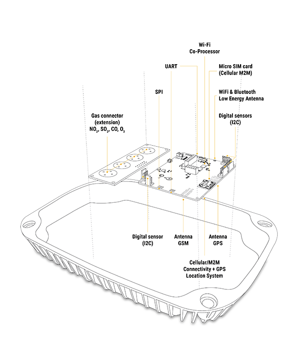
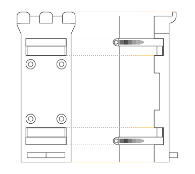
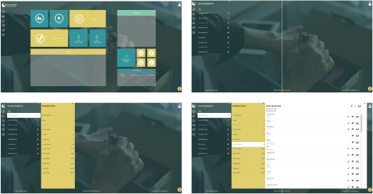

Smart Spot - Quick Guide¶
What is a Smart Spot?¶
Smart Spot is a connected device that has the ability to create an area of interaction with citizens and visitors. These devices send a URL (Web page link to open it in any browser such as smart phone Internet browser) to allow users to connect to online content and discover websites from physical locations. In addition, Smart Spot can optionally captures data regarding energy consumption, noise level and crowd-monitoring (people counting based on WiFi detection); thereby, Smart Spot allows to monitor, define metrics and estimate the confort level in a city area.
Smart Spot contextualizes the information of each Point of Interest sending notifications by proximity to mobile phones through Bluetooth Low Energy in a range of 1 to 80 meters, without requiring to install any native App over Android OS or iOS, since it is directly supported by the Operating Systems via Physical Web and iBeacon technologies.
Smart Spot Features¶
| Hardware Component | Features |
|---|---|
| Smart Spot main board V1.4 |
|
| Antennas |
|
| GSM (SIMCom 868) |
|
| GAS Sensors Extension |
|
| Noise Pollution monitoring |
|
| Temperature/Humidity probe |
|
First steps with your Smart Spot (Set up connectivity)¶
- This is a Smart Spot.
- On top of the Smart Spot there are four screws. Unscrew the cover and open the Smart Spot.
- When the Smart Spot is open, make sure the switch is on and insert the Micro SIM Card in its place.
- Put the cover back and place the screws in its place.
- When everything is ready inside the Smart Spot can start putting the probes and antennas on the back of the device following the scheme of this figure.
- Once all the probes and antennas are placed, the appearance of the Smart Spot would look like the diagram.
- Finally, this is the aspect of a Smart Spot with all peripherals properly placed.
How to install the device on a pole or on a wall¶
- Put the clamps around the pole to hold the support. Screw the clamps until the support is fixed. On wall, hold the support on the wall directly.
- Put the device on the support fitting the three pins in the three slots that the Smart Spot has in the back. Then drop it and fit it into the lower pin.
- Once fitted on all the pins, insert the screw through the bottom and press it until the Smart Spot is fixed.
What is Homard Dashboard?¶
HOMARD is a device management platform for the OMA LwM2M protocol. HOMARD is our own platform.
The platform offers functionalities for device management, i.e., remote maintenance, fi rmware upgrade and open/standard APIs for information reporting.
Software Management¶
Enabling the installation, removal of applications, and retrieval of inventory software components already installed on the device and the most relevant fi rmware upgrades over the air.
Diagnostics and monitoring¶
Enabling remote diagnostics and data models to check devices status, memory status, battery status, radio performance, Quality of Services (QoS) parameters, peripherals status, sensors status, and other relevant parameters for remote monitoring.
Connectivity and Security¶
Bluetooth, cellular connectivity, proxies, list of authorized servers for remote fi rmware upgrade and also all the relevant parameters for enabling secure communication.
Device Capabilities¶
Allowing to the Management Authority to remotely enable and disable device peripherals like cameras, Bluetooth, USB, sensors (ultrasound, temperature, humidity, etc.) and other relevant peripherals from the nodes.
Lock and wipe¶
Allowing to remotely lock and/or wipe the device, for instance when the device is lost (relevant for devices in open air, outdoor, etc.), or when the devices are stolen or sold. It enables the remote erase of personal/enterprise data when they are compromised.
Policy management¶
Allowing the deployment on the device of policies which the client (node, device, sensor) can execute and enforce independently under some specifi c conditions, i.e., if some events happen, then perform some operations.
Connecting and managing the device (default configuration)¶
The Smart Spots have a pre-configured WiFi Station where devices will connect, this Access Point (AP) can be easily deployed from GSM/GPRS Routers, MiFi Routers, WiFi Access Points, etc.
The default configuration is:
- SSID name: defaultSSAP
- Password: defaultSSAP1234
It means that Smart Spot will search and try to connect by default to a WiFi network with the mentioned SSID and password.
You need to create an access point in your smartphone or router with the default SSID name and Password for the device to connect to the network. When this access point is created the device connect automatically and it is visible in Homard Dashboard.
From http://staging.hopu.eu enter with your User and Password that we give you and can see the Homard Dashboard options.
There are two ways to connect the Smart Spot to network other than default network:
- WiFi Connectivity.
- APN Connectivity (SIM Card).
WiFi Connectivity¶
To connect to a network other than default network:
- Firstly create a access point with de default configuration of device.
- Go to Device Management and can see a list of devices connect to the network.
- Locate the device to be confi gured and click it.
- In the next column appears a list of object of this device, search the WLAN Connectivity object.
- Create a new Instance and enter data:
- Instance ID: Number not equal to zero.
- Interface name: Human-readable identifi er.
- Enable (True or False): True to connect with this configuration.
- SSID: SSID name of network to connect the device.
- Mode: Normally must be 1 (client), but there are others options.
- Channels: Choose a number of channel.
- Standard: Network type. Normally is the option 2.
- Authentication Mode: Resource can be anyone, it will be automatically confi gured by the stack.
- Encryption Mode: Defines which key is expected and used: * WPA2/WPA: Will require fi ll the “WPA Pre Shared Key” field. * WEP: Will require fi ll the “WEP Key Index” and “WEP Key Index” must be 1.
- In the list of objects, search Device object and click it.
- Search the Reboot option and click on play icon.
Finally, the device reboot and connect to the configured network. Note that multiple access points configurations can be stored and Smart Spot will try to connect to all of them, until that it gets Internet connectivity.
APN Connectivity (Cellular / M2M)¶
To connect the device a APN network other than the default network:
- Firstly create a access point with de default configuration of device.
- Go to Device Management and can see a list of devices connect to the network.
- Locate the device to be configured and click it.
- In the next column appear a list of object of this device, search the APN Connection object.
- Create a new Instance and enter data:
- Profile name: This name cannot be longer than 16 characters, identifi es the profile name on the device.
- APN: This resource contains the APN which will be used to achieve cellular connectivity. This value is provided by the SIM card telco provider.
- Enable Status: This resource allows to enable o disable the configuration. Usually will be true. The OMA Object only allow to add one instance corresponding to the SIM card inserted on the device. Modify or delete/add the instance to change the configuration.
- Authentication Type: This resource has a value >=0 and <=3. The value introduced by default should be 0, the authentication type will be automatically selected based on the connectivity provider.
- User name: Resource is used to specify the user name used to acces the APN. Unless specifi ed by the telco provider, this resource could be empty.
- Secret: Resource is used to specify the user name used to access the APN. Unless specified by the telco provider, this resource could be empty.
- SIM card PIN: Resource is used to introduce the PIN used to unblock the SIM card.
- In the list of objects, search Device object and click it.
- Search the Reboot option and click on play icon.
Finally, the device will reboot and connect to the configured APN.
How to verify that the sensor is properly working?¶
To ensure that device and sensors are working, you can enter to Health Monitoring section of Homard. Here you will fi nd information about Device Status, Performance and Latency.
In Device Status you can observe data about the Smart Spot CPU and Memory consumption and the configuration of the device.
The Performance section shows information about the Smart Spot reachability, lost messages and other alarms.
Finally, Latency section shows information about the time it takes to perform a test and communicate with the server.
To update the information you need to click on the Book icon at the top right of the page. The information will be visible at that time.
How to see the sensor information?¶
To see the information for each of sensor, you need to ingress to Device Management section of Homard and, in the list of objects, look for the sensor that you want information. In this figure you can see the Temperature Object and all its resources.
Here, you can see the information for each resource of Temperature Sensor.
To update the information of all resources you need to click on the Book icon at the top right of the page. If you want update the information of a single resource, you need to click on the Book icon at right of the resource name.
Here, you can also do more actions with the resources.
You can create a simple observer or composite observer in a resource clicking the Eye icon at the right of the resource name. This will send notifi cations every time that these resource changes.
Finally, you can active actions such as start/stop or reset. To active this actions you need to click on the Play icon at the right of the resource name.